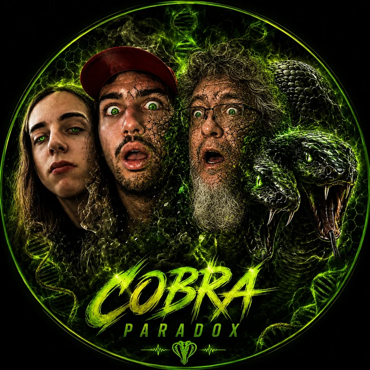
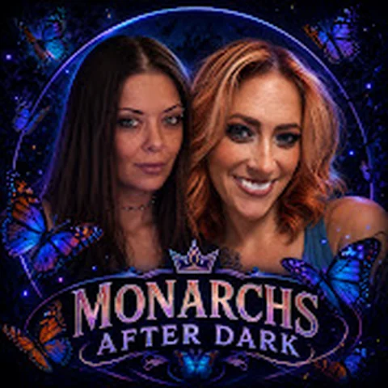
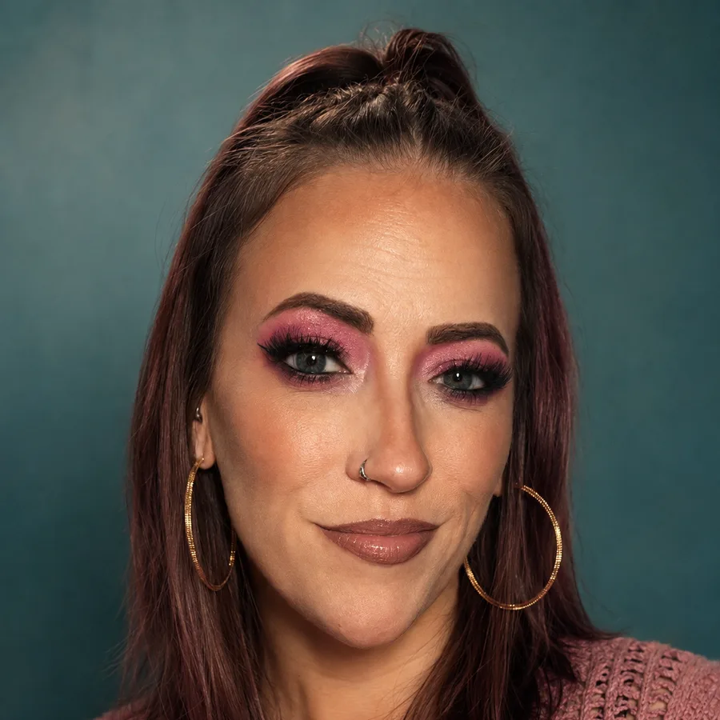

The Top Content Crew
THE TONY
VERSE
FOUR HOSTS. ONE MUTATION. Follow the crew across every channel and catch the Discord where it all actually gets decided.
HR
HR Department
Catch Up
Most Recent Streams
04 clips
Catch Up
Most Recent Streams
Clip Channel
🍎 JOHNNY APPLE CLIPZ 🍎
04 clips
Clip Channel
🍎 JOHNNY APPLE CLIPZ 🍎
Certified Chaos
The Tony Schitzo Section
04 clips
Certified Chaos
The Tony Schitzo Section
By The Numbers
Channel Stats

Monarchs After DarkLive from the YouTube Data API — every tile refreshes itself every hour and tracks growth day to day. The link under each tile follows suit: it points at a live broadcast the moment one starts, a scheduled stream once one's on the calendar, or their latest upload otherwise — and a new video or stream pulls fresh subscriber/view numbers immediately instead of waiting for the next cycle. If a call fails, the last known numbers stay put.
Weekly
Schedule
| Host | Mon | Tue | Wed | Thu | Fri |
|---|---|---|---|---|---|
| Tony Live | — | 10 AM–12 PM | — | 10 AM–12 PM | — |
| Rantz Live | 12–2 PM | — | 12–2 PM | — | 12–2 PM |
| Nazz Live | 2–5 PM | — | — | — | 2–5 PM |
| Kie Live | 4–6 PM | 4–6 PM | — | 4–6 PM | 3–5 PM |
All times Eastern (ET) · today's slots are highlighted · subject to change.
Watch
The Crew
Copy a username, then use Discord's Add Friend search to send the request.
Watch
Reoccurring Guests
Copy a username, then use Discord's Add Friend search to send the request.
Host Tools
Creator Toolkit
Movie Night
Upcoming Movie
Marvel
Spider-Man Corner
Support
Send a Tip
Every tip goes straight to that host.
Live
The Server
2d 11h 10m 26s
Currently the #13,121 tallest tree of all. Well done!
Member count is pulled live from the invite · the tree keeps growing in real time.
Get in before the next drop.
Schedules, clips, and crew chatter live in Discord first.
Biography
Tony Network Manager Riggatony Click the photo to read the story Click to collapse
Tony is someone who has never been particularly interested in living life quietly. From a young age, he learned that life could change quickly. His experiences growing up gave him an unusual perspective on people, loyalty, independence, and the importance of finding somewhere—or someone—you genuinely belong. Those experiences became part of the foundation for the person he would eventually become.
As he got older, creativity became one of the biggest ways Tony expressed himself. Music, livestreaming, YouTube, visual design, gaming, and storytelling all became different outlets for the same thing: creating something that feels like his.
Music has always been a major part of that identity. Tony has experimented with everything from Toronto and UK drill to darker trap, melodic hip-hop, dancehall-inspired sounds, and atmospheric music. He's interested not only in writing lyrics, but in the entire process—the cadence, ad-libs, BPM, key, production, 808s, atmosphere, and overall feeling of a song. He doesn't simply want to make music; he wants to understand why something sounds the way it does.
That same mentality appears in his content. Through livestreaming and online communities, Tony has built a world around personalities, inside jokes, recurring shows, characters, themes, and visual identities. Projects such as Coffee Time With Alfredo, Monarch After Dark, and the broader 3PT community reflect something important about him: he doesn't just want to participate in a community. He wants to build one.
His creativity extends into visual storytelling as well. Thumbnails, logos, banners, fictional scenarios, horror concepts, cinematic designs, collectible characters, gaming ideas, and elaborate visual themes are all part of his creative toolbox. He tends to think in pictures—often imagining how something should look before figuring out how to make it real.
Another defining part of Tony's personality is curiosity. He has a tendency to take an idea and keep pulling on it. A Marvel theory can turn into an exploration of Doctor Doom, the Beyonder, Battleworld, Secret Wars, and the Fantastic Four. A game can become a mystery, a theory, or an entire fictional scenario. A simple question can become a much deeper investigation into how something works. He doesn't seem particularly satisfied with the surface-level answer.
That curiosity also shows up in the way he thinks about himself. Tony has repeatedly been interested in understanding his own thought processes—asking questions about his habits, patterns, motivations, creativity, and the way his mind connects different ideas. At times, that curiosity can become intense, but underneath it is a consistent desire for self-understanding.
Financially and practically, Tony has also spent considerable time thinking about independence and the future. He's explored saving, investing, travel, education, work, and different possibilities for building a life on his own terms. He's interested in opportunities, but he's also learning the difference between taking a risk and making a calculated decision.
Tony has experimented with different sounds, brands, shows, communities, ideas, aesthetics, and versions of himself. Some projects last for a while. Others evolve into something completely different. But the pattern remains: he creates, tests, changes, and creates again. He's not someone who seems content with one identity forever. He's constantly building the next version.
And that may ultimately be the most interesting thing about Tony's story. It isn't finished. The person behind the music, livestreams, theories, thumbnails, jokes, late-night conversations, ambitious ideas, and endless questions is still figuring out exactly what he wants his life to become. He wants to create something inside it. And he's still writing the story.
Nazz Monarch Manager 3Point Click the photo to read the story Click to collapse
From the Streets of New Jersey to the Streaming World
My name is Nazz, and my life has never been a straight road.
My story is one of growing up around violence, dealing with bullying, losing dreams I had worked hard to build, and eventually finding people who became more than friends. They became my brothers. Through everything I've experienced, I've learned that sometimes the people you meet later in life can become just as important as the people you grew up with.
This is my story.
Growing Up in New Jersey
I grew up in a development in New Jersey, surrounded by an environment where gangs, violence, and trouble were part of the world around me.
From a young age, I saw things that forced me to grow up in ways I probably shouldn't have had to.
At the same time, I dealt with being bullied for years.
Growing up while constantly feeling like you don't fit in can change the way you look at yourself and the world around you. I wasn't the kid who always had everything figured out. I struggled in school, and I never really liked being told what to do.
School was never where I felt like I belonged.
I had trouble with authority, struggled academically, and often felt like the traditional path that people expected me to follow wasn't the path meant for me.
Another major part of my childhood was growing up without much of a relationship with my father after I was around ten years old.
That absence affected me.
When someone important isn't there while you're growing up, you notice it. Even if you don't always talk about it, it becomes part of your story.
Baseball Became My Escape
One of the biggest constants in my younger life was baseball.
I played baseball for approximately 13 years.
For me, baseball wasn't just a sport. It was an escape.
When life outside the field became difficult, baseball gave me somewhere else to go. I could step onto the field, focus on the game, and for a while put everything else out of my head.
It gave me something to work toward and something that belonged to me.
For thirteen years, baseball was a major part of my life.
But eventually, I found another sport that would completely change the direction of my life.
Finding Boxing
I wanted to learn how to fight.
Part of that came from the environment I grew up in. After dealing with bullying and seeing violence around me, I wanted to become someone who could defend himself.
That's when I started boxing.
What began as an attempt to learn how to fight eventually became something much bigger.
I became good at it.
Boxing gave me discipline, confidence, and something to prove. The person who had spent years being bullied was now standing inside a boxing gym, training, improving, and discovering that he was capable of becoming stronger.
For the first time, I had something that felt like it could become my future.
I started believing that boxing could actually become a career.
Then everything changed.
An injury ended my boxing career.
The dream I had spent so much time building was suddenly taken away from me.
Losing boxing wasn't simply losing a hobby. It meant losing a future I had started imagining for myself.
I had already experienced losing things I cared about, and now I had to figure out what came next.
A Completely Different Chapter
After boxing, my life went through another difficult period.
I struggled with addiction and had to find my way through a part of my life that I wasn't proud of.
Eventually, my life began moving in a different direction.
I met people who changed the way I looked at my future, including the person who would become my wife, Kie Luna from Monarchs.
My relationship with Kie Luna became one of the most important parts of my life. She became someone who helped give me another reason to keep moving forward and build something better.
My life wasn't suddenly perfect. But I had a reason to keep going.
And eventually, another unexpected chapter began.
Finding Family Online
I never expected some of the most important people in my life to come from the internet.
Then I discovered Discord.
And Discord introduced me to someone who would become one of the most important people in my life.
That person was Tony Riggatony.
Tony became much more than another friend. He became one of my number-one brothers.
Tony became someone I could go to about practically anything. Someone who was there when I needed someone to talk to. Someone who believed in me and supported me.
Eventually, the friendship became family.
That's something I've always believed strongly in: family isn't only about blood. Sometimes family is the people who choose to stand beside you.
Tony became that person for me.
Discovering Streaming
After losing boxing, I needed something else to chase. Eventually, I found streaming.
Gaming had always been something I enjoyed, and streaming gave me a way to combine gaming, entertainment, creativity, and interaction with other people.
My identity as Nazz began taking shape.
I wasn't simply playing games anymore. I was building something.
I started streaming on Kick, taking the first real steps toward the dream of becoming a streamer.
But what made the journey different was that I wasn't doing it alone.
Tony believed in me. He pushed me. He encouraged me. He helped me continue chasing something that I might have otherwise given up on.
From a Streamer to Building Something Bigger
The dream eventually grew beyond simply going live and playing games.
We started building our own network. What began as individual dreams became something we could work on together.
We wanted to create something of our own. The idea wasn't just about streaming—it was about building a community. It was about creating something where creators could come together, entertain people, grow, and chase their own dreams.
And the most important part was that the people beside me were people I trusted. Tony Riggatony. My brother.
The same people who had encouraged me when I was still trying to figure out where my life was going were now part of the future I was building.
Nazz the Gamer and Creator
Today, Nazz represents much more than a username. It's the identity I've built through years of experiences.
I'm a gamer and streamer who enjoys shooters and a mixture of different games.
I've also explored music, podcasting, creative projects, entertainment, and building communities.
I've created ideas around podcasts and shows, including projects such as Lolcow Wild, Lolcow Jesters, Lolcow Test, and Shooting the Shit.
I've worked on themes, songs, characters, stories, and concepts because I've always enjoyed creating things. Streaming gave me somewhere to put that creativity.
Instead of simply consuming entertainment, I wanted to help create it.
The Riggatony Family
One of the biggest themes that has developed throughout my life is family.
The Riggatony family became an important part of my world.
Names like Tony Riggatony, Johnny J Riggatony, and the people who became part of that circle represent something bigger than simply usernames or online friendships.
They represent belonging.
I've used the idea of the Riggatony bloodline in music, jokes, podcasts, streams, and creative projects because the concept means something to me.
It's about loyalty. It's about having people's backs. It's about knowing that there are people you can call brothers even when you weren't born into the same family.
The Music Behind the Story
Music has also become another way I've told my story.
I've explored rap, rock, metal, country, Toronto-inspired trap and drill, podcast themes, gaming intros, and other styles.
A lot of the music I've created revolves around the same themes: family, loyalty, overcoming adversity, New Jersey, boxing, streaming, friendship, the Riggatony family—and most importantly, continuing to chase your dreams even after life takes something away from you.
My story has always had a rhythm to it. I went from the streets and baseball fields of New Jersey… to a boxing gym… to losing the career I thought I wanted… to rebuilding my life… to finding Kie Luna… to meeting Tony… to discovering streaming… to building a network… and now toward whatever comes next.
The People Who Changed My Life
There are certain people who become chapters in your story. Some people are there for a short time. Others stay.
For me, Tony is one of those people who stayed.
He didn't just tell me to chase my dreams. He helped me chase them.
He's pushed me when I've needed pushing. He's supported me when I've needed support. He's been part of the journey from the beginning of my streaming dream to the network we're building today.
And that is something I will never take for granted.
I love these boys like brothers. I appreciate everything they've done for me. And more importantly, I'm grateful for what we're still building together.
Looking Back
When I look back at my life, I see a lot of things that didn't go according to plan.
I see the kid who grew up around violence. I see the kid who was bullied. I see the kid who struggled in school. I see the kid who grew up without his father being there after the age of ten.
I see the baseball player who spent thirteen years on the field. I see the boxer who finally found something he was good at. I see the person who had that dream taken away by an injury.
I see the person who went through addiction and had to find a way to rebuild.
I see the husband who found Kie Luna. I see the gamer who eventually discovered streaming. And I see the person who met two strangers on Discord who eventually became brothers.
Every one of those versions of me is part of who I am. None of them can be separated from the others.
The Future
My story isn't finished. That's probably the most important thing I've learned.
Losing boxing didn't mean I had nothing left. Struggling didn't mean I was finished. Having dreams fall apart didn't mean I couldn't build new ones.
Sometimes life takes you down a road you never expected to travel. And sometimes that road eventually takes you somewhere better.
Today, I'm still chasing my dreams. I'm still streaming. I'm still creating. I'm still building. I'm still working toward the future. And I'm still surrounded by people who believe in me.
Tony Riggatony. My family. The people I've met through streaming and gaming. The community we've built. And everyone who has supported Nazz along the way.
I don't know exactly where this story ends. But I know one thing: we're not finished yet.
Nazz
I started out as a kid trying to find a place where I belonged.
I found it in baseball. Then I found it in boxing. Then I lost it. I had to rebuild.
And eventually, I found something completely different. I found streaming. I found creativity. I found a community. And most importantly, I found a brother.
Tony didn't just become a friend I met online. He became part of my life. He helped me believe that I could still build something after losing so much. He helped push me toward a dream. And now we're building the future together.
So this isn't a story about everything that went wrong. It's a story about what happened after things went wrong. It's about getting knocked down and finding another reason to stand up. It's about losing one dream and discovering another. It's about friendship becoming family. And it's about refusing to believe that your past gets to decide your future.
This is Nazz's story.
From New Jersey to the boxing ring. From the boxing ring to the screen. From losing dreams to building new ones. From strangers on Discord to brothers for life.
And we're only getting started.
Lucifina Host Monarchs After Dark Click the photo to read the story Click to collapse
Hi, I'm Luci—a weird nerd, a proud misfit, and someone who's never been afraid to be unapologetically herself.
For most of my life, I've been seen as the underdog. But if there's one thing I've learned, it's that you should never underestimate what I'm capable of. Being different has never stopped me from chasing what I want.
My journey into streaming began almost a year ago. I started by helping a channel reach monetization and eventually spent six months hosting. It was an experience filled with fun, challenges, and plenty of lessons. More importantly, it taught me something about knowing my worth—and recognizing when it's time to walk away from people who don't truly value me.
Leaving that chapter behind brought me back to where I belong: with my family. Tony, Nazz, Cryssi, and James became more than just people I streamed with. They became the family and community I wouldn't trade for the world.
Now, I'm stepping into a new chapter alongside Kieluna on Monarchs After Dark, and we're absolutely killing it.
I don't know exactly where this journey will take me, but I know I'm surrounded by the right people, doing something I love, and finally in a place where I belong. This is only the beginning.
I'm Lucifina. I'm weird. I'm unapologetically me. And I'm just getting started.

KieLuna Host Monarchs After Dark
Click the photo to read the story
Click to collapse
A Story of Resilience, Love, and Living the Dream
Born and raised in New Jersey, KieLuna grew up surrounded by love, family, and the kind of foundation that would eventually help carry her through some of life's most difficult chapters. From an early age, however, KieLuna knew there was something different about her—a connection to the spiritual world that she couldn't quite explain.
As a third-generation medium, her journey with spirituality began when she was only three years old, when she experienced her first encounter with the unseen. What could have been frightening became something she gradually learned to understand and embrace. Today, KieLuna continues to explore and develop her abilities through medium development classes, working to better understand her gifts and the responsibility that comes with them.
But KieLuna's story isn't only about the extraordinary. It is also about survival, perseverance, and second chances.
At just ten years old, KieLuna found herself struggling with an addiction to pain medication. Years later, at eighteen, alcohol became another battle. Her journey through addiction was difficult, but it ultimately became one of the most powerful chapters of her life. Today, KieLuna proudly celebrates 17 years clean and sober—a milestone that represents not only her strength, but the life she fought to reclaim.
Rather than allowing her past to define her, KieLuna transformed it into part of the story that makes her who she is today. Her experiences have given her compassion, understanding, and an appreciation for the preciousness of life. She knows firsthand that even when someone feels lost, there can always be a way forward.
Creativity and entertainment have also played an important role throughout KieLuna's life. With a background in theater and experience performing in multiple plays, she discovered early on how much she loved entertaining people, telling stories, and connecting with an audience. That passion would eventually lead her toward an entirely new chapter.
KieLuna has always had a deep appreciation for the beauty industry, particularly makeup and the creativity that comes with it. In 2020, she began sharing makeup videos on TikTok. She'll be the first to admit that she wasn't an expert when she started. But instead of giving up, she watched tutorials, practiced, learned from other artists, and taught herself.
Her dedication eventually caught the attention of the Online Makeup Academy, which reached out to her in 2023 and offered her the opportunity to complete their full makeup course. That opportunity became a turning point, helping her grow both creatively and personally while her TikTok community continued to grow alongside her.
Then came an opportunity that would change everything.
One day, KieLuna's husband, Nazz, asked her if she wanted to be part of a show. At first, she was hesitant. Stepping into something new can be intimidating, especially when you don't know where the road will lead. But she took a chance—and she is incredibly grateful that she did.
Today, KieLuna is a host of “Monarchs After Dark,” a role that brings together so many of the things she loves: entertainment, storytelling, creativity, spirituality, and, most importantly, people.
What began as a hesitant “maybe” became the realization of a dream.
Through the show and the community surrounding it, KieLuna has found something she treasures deeply: family. The friendships she has formed through Discord and the world of “Monarchs After Dark” have become some of the most meaningful relationships in her life. To her, these aren't simply people she works with or communities she participates in—they are people she hopes will remain part of her life for many years to come.
Among those she holds especially close to her heart are her husband, Nazz; her brother, Tony; her sister, Luci; and the countless friends and supporters who have stood beside her along the way.
KieLuna's journey is a reminder that a person's beginning does not determine their ending.
She is a medium who continues to learn and grow, a survivor who turned her darkest chapters into strength, a performer who found her love for entertainment, a makeup artist who taught herself to create, and a host who finally said yes to an opportunity that once made her nervous.
Most of all, she is someone who understands the value of a second chance.
Every chapter—the difficult ones, the beautiful ones, and the unexpected ones—has helped shape the woman she is today. And as KieLuna continues forward, she does so with gratitude for the people who believed in her, the lessons that shaped her, and the dreams that are still waiting to be discovered.
“Monarchs After Dark” may be one of her dreams come true, but KieLuna's greatest accomplishment is the life she built after everything she survived.
And she wouldn't be here without the people who walked beside her.
To her family, her friends, her brothers and sisters, her husband, and everyone who has supported her journey: thank you. This dream belongs to all of you, too.
Rantz Host Revved up Reactons Click the photo to read the story Click to collapse
Gamer James, better known to his community as Rantz, is a gaming content creator, entertainer, and storyteller whose personality has become just as important to his content as the games themselves.
At his core, Rantz is a gamer and a Minecraft lover, but describing him simply as a gaming creator doesn't quite capture what makes him stand out. His appeal comes from the combination of gaming, humor, storytelling, commentary, and the unpredictable personality he brings to every interaction.
Rantz has built his identity around being funny, outspoken, and entertaining. Whether he's playing a game, telling a story, reacting to something happening around him, or simply talking with his community, there is a strong emphasis on personality. His content isn't necessarily about watching someone quietly play a game—it is about watching Rantz be Rantz.
The Gamer
Gaming has always been one of the foundations of Rantz's identity. Among the games associated with him, Minecraft holds a particular place, reflecting both his love for gaming and his ability to turn relatively simple gameplay into entertainment through commentary and storytelling.
For Rantz, gaming isn't just about winning or completing objectives. It's a way to create moments, jokes, stories, arguments, reactions, and memories with the people around him.
That philosophy has helped shape the broader personality behind the name.
The Storyteller
One of Rantz's defining characteristics is his ability to tell a story.
A normal situation can become an entire event when Rantz explains it. His storytelling style relies heavily on personality, timing, humor, exaggeration for comedic effect, and the ability to make his audience feel like they're sitting in the room listening to the story themselves.
This is an important part of what separates Rantz from a traditional gaming personality. The game may provide the setting, but the personality provides the entertainment.
The Personality Behind Rantz
The name Rantz has become more than an online alias. It represents a recognizable personality and a particular style of entertainment.
Rantz is the kind of creator who isn't afraid to have an opinion, make a joke, challenge someone, or turn an ordinary conversation into a memorable moment. His content can move quickly between gaming, comedy, storytelling, commentary, and community interaction.
That unpredictability is part of the appeal.
There is also a strong community element surrounding Rantz. His audience isn't treated simply as viewers—they become part of the conversations, jokes, debates, and moments that make up his content.
More Than Gaming
As Rantz's identity has developed, gaming has become only one part of a larger entertainment persona.
The broader Rantz brand is built around conversation, humor, personalities, stories, and community. That gives him the flexibility to exist outside of a single game or format.
Whether the subject is Minecraft, another game, a ridiculous story, something happening within the community, or simply whatever happens to be going on that day, the central attraction remains the same: Rantz himself.
The Legacy of Gamer James
What makes Gamer James interesting isn't simply that he plays games.
It's that he has taken something millions of people do—gaming—and turned it into a vehicle for personality and storytelling.
The name Gamer James represents the gamer. The name Rantz represents the entertainer.
Together, they describe a creator whose identity has been built around humor, gaming, storytelling, and the people who continue to show up for the next stream, the next story, and the next unpredictable moment.
Gamer James—Rantz—is ultimately a storyteller who happens to have gaming at the center of his world.
And for his community, that's what makes Rantz, Rantz.
Kay C Clipper Click the photo to read the story Click to collapse
Kay C is one of the personalities who has become part of the growing creator community surrounding Tony, 3 Point, the Monarchs, and the wider streaming circle. Known simply as Kay C, he has established his own identity within a community built around livestreaming, collaboration, entertainment, and the personalities that make each broadcast different from the last.
Unlike a creator who exists entirely on his own, Kay C's story is closely connected to the larger group. His appearances and involvement have helped make the community feel like a shared universe rather than a collection of unrelated streams.
Becoming Part of the Crew
Kay C became part of a regular streaming lineup alongside personalities such as Tony, Nazz, TVP, and CRBPRDX.
His name has appeared repeatedly in the community's schedules, showing that his involvement wasn't simply occasional. He became one of the recurring personalities trusted with his own streaming slots and a place within the group's programming.
The schedules have included Kay C on multiple days, including appearances alongside other members of the crew. This collaborative approach became one of the defining characteristics of the community.
The 3 Point Connection
A major part of Kay C's story is his connection to the 3 Point community.
3 Point developed into more than just a name. It became a shared identity surrounding creators, livestreams, Discord culture, recurring shows, inside jokes, and an expanding cast of personalities.
Kay C became part of that world during a period when the community was constantly evolving.
The group experimented with different programming concepts and themed days, giving each personality opportunities to bring their own energy into the overall community.
Kay C's role within that environment helped contribute to the sense that 3 Point was becoming a genuine creator collective.
The Streaming Era
Kay C's involvement is particularly tied to the group's livestreaming culture.
The community's schedule has gone through several versions, with different creators receiving specific times throughout the week. Kay C has been included in these rotations, demonstrating his role as one of the people helping keep the community's content active.
Rather than every stream being centered around one person, the group developed a rotating system where different creators could take over at different times.
Kay C became one of those recurring faces.
That format allowed personalities to develop their own audiences while still remaining connected to the larger community.
Kay C and the Other Creators
One of the most important aspects of Kay C's place in the community is collaboration.
He exists within a network that includes Tony, Nazz, TVP, CRBPRDX, and others.
Each person brings their own personality and perspective, and much of the entertainment comes from the interactions between them.
Kay C contributes to that chemistry simply by being part of the cast.
The community has never been completely predictable. Streams can shift between jokes, arguments, serious discussions, chaotic moments, and completely unexpected situations. That unpredictability has become part of what makes the group distinctive.
The Culture Around Kay C
Kay C is also part of the culture that developed around the Monarchs and 3 Point communities.
Names such as Monarch After Dark, 3 Point, and the various creator identities have helped create an environment with its own terminology, branding, traditions, and running jokes.
Kay C's presence places him within that culture.
He isn't simply a name on a schedule. He's one of the personalities that audiences can associate with the broader era of the community.
His Place in the Story
What makes Kay C's story interesting is that his biography is still being written.
The community has gone through multiple changes in schedules, shows, branding, and personalities. Through those changes, Kay C has remained part of the larger creator network.
His story isn't defined by one single moment. Instead, it is defined by his continued presence and involvement in a community that has continued to grow and change.
Legacy
Kay C's place in the 3 Point and Monarchs era represents the importance of the people behind the community.
A creator community isn't built around one person alone. It is built from the personalities who show up, collaborate, argue, joke around, create memories, and give viewers reasons to keep coming back.
Kay C is one of those personalities.
As the community continues to evolve, his name remains part of its history—a recurring member of the creator circle that helped shape the 3 Point / Monarchs era.
And because the story is still unfolding, Kay C's biography doesn't really have an ending yet. This is only the beginning.